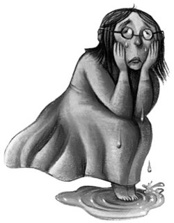

What’s going on here? What’s going on?”
Attracted no doubt by Malfoy’s shout, Argus Filch came shouldering his way through the crowd. Then he saw Mrs. Norris and fell back, clutching his face in horror.
“My cat! My cat! What’s happened to Mrs. Norris?” he shrieked.
And his popping eyes fell on Harry.
“You!” he screeched. “You! You’ve murdered my cat! You’ve killed her! I’ll kill you! I’ll —”
“Argus!”
Dumbledore had arrived on the scene, followed by a number of other teachers. In seconds, he had swept past Harry, Ron, and Hermione and detached Mrs. Norris from the torch bracket.
“Come with me, Argus,” he said to Filch. “You, too, Mr. Potter, Mr. Weasley, Miss Granger.”
Lockhart stepped forward eagerly.
“My office is nearest, Headmaster — just upstairs — please feel free —”
“Thank you, Gilderoy,” said Dumbledore.
The silent crowd parted to let them pass. Lockhart, looking excited and important, hurried after Dumbledore; so did Professors McGonagall and Snape.
As they entered Lockhart’s darkened office there was a flurry of movement across the walls; Harry saw several of the Lockharts in the pictures dodging out of sight, their hair in rollers. The real Lockhart lit the candles on his desk and stood back. Dumbledore laid Mrs. Norris on the polished surface and began to examine her. Harry, Ron, and Hermione exchanged tense looks and sank into chairs outside the pool of candlelight, watching.
The tip of Dumbledore’s long, crooked nose was barely an inch from Mrs. Norris’s fur. He was looking at her closely through his half-moon spectacles, his long fingers gently prodding and poking. Professor McGonagall was bent almost as close, her eyes narrowed. Snape loomed behind them, half in shadow, wearing a most peculiar expression: It was as though he was trying hard not to smile. And Lockhart was hovering around all of them, making suggestions.
“It was definitely a curse that killed her — probably the Transmogrifian Torture — I’ve seen it used many times, so unlucky I wasn’t there, I know the very countercurse that would have saved her. . . .”
Lockhart’s comments were punctuated by Filch’s dry, racking sobs. He was slumped in a chair by the desk, unable to look at Mrs. Norris, his face in his hands. Much as he detested Filch, Harry couldn’t help feeling a bit sorry for him, though not nearly as sorry as he felt for himself. If Dumbledore believed Filch, he would be expelled for sure.
Dumbledore was now muttering strange words under his breath and tapping Mrs. Norris with his wand, but nothing happened: She continued to look as though she had been recently stuffed.
“. . . I remember something very similar happening in Ouagadogou,” said Lockhart, “a series of attacks, the full story’s in my autobiography, I was able to provide the townsfolk with various amulets, which cleared the matter up at once. . . .”
The photographs of Lockhart on the walls were all nodding in agreement as he talked. One of them had forgotten to remove his hair net.
At last Dumbledore straightened up.
“She’s not dead, Argus,” he said softly.
Lockhart stopped abruptly in the middle of counting the number of murders he had prevented.
“Not dead?” choked Filch, looking through his fingers at Mrs. Norris. “But why’s she all — all stiff and frozen?”
“She has been Petrified,” said Dumbledore (“Ah! I thought so!” said Lockhart). “But how, I cannot say. . . .”
“Ask him!” shrieked Filch, turning his blotched and tearstained face to Harry.
“No second year could have done this,” said Dumbledore firmly. “It would take Dark Magic of the most advanced —”
“He did it, he did it!” Filch spat, his pouchy face purpling. “You saw what he wrote on the wall! He found — in my office — he knows I’m a — I’m a —” Filch’s face worked horribly. “He knows I’m a Squib!” he finished.
“I never touched Mrs. Norris!” Harry said loudly, uncomfortably aware of everyone looking at him, including all the Lockharts on the walls. “And I don’t even know what a Squib is.”
“Rubbish!” snarled Filch. “He saw my Kwikspell letter!”
“If I might speak, Headmaster,” said Snape from the shadows, and Harry’s sense of foreboding increased; he was sure nothing Snape had to say was going to do him any good.
“Potter and his friends may have simply been in the wrong place at the wrong time,” he said, a slight sneer curling his mouth as though he doubted it. “But we do have a set of suspicious circumstances here. Why was he in the upstairs corridor at all? Why wasn’t he at the Halloween feast?”
Harry, Ron and Hermione all launched into an explanation about the deathday party. “. . . there were hundreds of ghosts, they’ll tell you we were there —”
“But why not join the feast afterward?” said Snape, his black eyes glittering in the candlelight. “Why go up to that corridor?”
Ron and Hermione looked at Harry.
“Because — because —” Harry said, his heart thumping very fast; something told him it would sound very far-fetched if he told them he had been led there by a bodiless voice no one but he could hear, “because we were tired and wanted to go to bed,” he said.
“Without any supper?” said Snape, a triumphant smile flickering across his gaunt face. “I didn’t think ghosts provided food fit for living people at their parties.”
“We weren’t hungry,” said Ron loudly as his stomach gave a huge rumble.
Snape’s nasty smile widened.
“I suggest, Headmaster, that Potter is not being entirely truthful,” he said. “It might be a good idea if he were deprived of certain privileges until he is ready to tell us the whole story. I personally feel he should be taken off the Gryffindor Quidditch team until he is ready to be honest.”
“Really, Severus,” said Professor McGonagall sharply, “I see no reason to stop the boy playing Quidditch. This cat wasn’t hit over the head with a broomstick. There is no evidence at all that Potter has done anything wrong.”
Dumbledore was giving Harry a searching look. His twinkling light-blue gaze made Harry feel as though he were being X-rayed.
“Innocent until proven guilty, Severus,” he said firmly.
Snape looked furious. So did Filch.
“My cat has been Petrified!” he shrieked, his eyes popping. “I want to see some punishment!”
“We will be able to cure her, Argus,” said Dumbledore patiently. “Professor Sprout recently managed to procure some Mandrakes. As soon as they have reached their full size, I will have a potion made that will revive Mrs. Norris.”
“I’ll make it,” Lockhart butted in. “I must have done it a hundred times. I could whip up a Mandrake Restorative Draught in my sleep —”
“Excuse me,” said Snape icily. “But I believe I am the Potions master at this school.”
There was a very awkward pause.
“You may go,” Dumbledore said to Harry, Ron, and Hermione.
They went, as quickly as they could without actually running. When they were a floor up from Lockhart’s office, they turned into an empty classroom and closed the door quietly behind them. Harry squinted at his friends’ darkened faces.
“D’you think I should have told them about that voice I heard?”
“No,” said Ron, without hesitation. “Hearing voices no one else can hear isn’t a good sign, even in the Wizarding world.”
Something in Ron’s voice made Harry ask, “You do believe me, don’t you?”
“’Course I do,” said Ron quickly. “But — you must admit it’s weird. . . .”
“I know it’s weird,” said Harry. “The whole thing’s weird. What was that writing on the wall about? The Chamber Has Been Opened. . . . What’s that supposed to mean?”
“You know, it rings a sort of bell,” said Ron slowly. “I think someone told me a story about a secret chamber at Hogwarts once . . . might’ve been Bill. . . .”
“And what on earth’s a Squib?” said Harry.
To his surprise, Ron stifled a snigger.
“Well — it’s not funny really — but as it’s Filch,” he said. “A Squib is someone who was born into a Wizarding family but hasn’t got any magic powers. Kind of the opposite of Muggle-born wizards, but Squibs are quite unusual. If Filch’s trying to learn magic from a Kwikspell course, I reckon he must be a Squib. It would explain a lot. Like why he hates students so much.” Ron gave a satisfied smile. “He’s bitter.”
A clock chimed somewhere.
“Midnight,” said Harry. “We’d better get to bed before Snape comes along and tries to frame us for something else.”
For a few days, the school could talk of little else but the attack on Mrs. Norris. Filch kept it fresh in everyone’s minds by pacing the spot where she had been attacked, as though he thought the attacker might come back. Harry had seen him scrubbing the message on the wall with Mrs. Skower’s All-Purpose Magical Mess Remover, but to no effect; the words still gleamed as brightly as ever on the stone. When Filch wasn’t guarding the scene of the crime, he was skulking red-eyed through the corridors, lunging out at unsuspecting students and trying to put them in detention for things like “breathing loudly” and “looking happy.”
Ginny Weasley seemed very disturbed by Mrs. Norris’s fate. According to Ron, she was a great cat lover.
“But you haven’t really got to know Mrs. Norris,” Ron told her bracingly. “Honestly, we’re much better off without her.” Ginny’s lip trembled. “Stuff like this doesn’t often happen at Hogwarts,” Ron assured her. “They’ll catch the maniac who did it and have him out of here in no time. I just hope he’s got time to Petrify Filch before he’s expelled. I’m only joking —” Ron added hastily as Ginny blanched.
The attack had also had an effect on Hermione. It was quite usual for Hermione to spend a lot of time reading, but she was now doing almost nothing else. Nor could Harry and Ron get much response from her when they asked what she was up to, and not until the following Wednesday did they find out.
Harry had been held back in Potions, where Snape had made him stay behind to scrape tubeworms off the desks. After a hurried lunch, he went upstairs to meet Ron in the library, and saw Justin Finch-Fletchley, the Hufflepuff boy from Herbology, coming toward him. Harry had just opened his mouth to say hello when Justin caught sight of him, turned abruptly, and sped off in the opposite direction.
Harry found Ron at the back of the library, measuring his History of Magic homework. Professor Binns had asked for a three-foot-long composition on “The Medieval Assembly of European Wizards.”
“I don’t believe it, I’m still eight inches short. . . .” said Ron furiously, letting go of his parchment, which sprang back into a roll. “And Hermione’s done four feet seven inches and her writing’s tiny.”
“Where is she?” asked Harry, grabbing the tape measure and unrolling his own homework.
“Somewhere over there,” said Ron, pointing along the shelves. “Looking for another book. I think she’s trying to read the whole library before Christmas.”
Harry told Ron about Justin Finch-Fletchley running away from him.
“Dunno why you care. I thought he was a bit of an idiot,” said Ron, scribbling away, making his writing as large as possible. “All that junk about Lockhart being so great —”
Hermione emerged from between the bookshelves. She looked irritable and at last seemed ready to talk to them.
“All the copies of Hogwarts: A History have been taken out,” she said, sitting down next to Harry and Ron. “And there’s a two-week waiting list. I wish I hadn’t left my copy at home, but I couldn’t fit it in my trunk with all the Lockhart books.”
“Why do you want it?” said Harry.
“The same reason everyone else wants it,” said Hermione, “to read up on the legend of the Chamber of Secrets.”
“What’s that?” said Harry quickly.
“That’s just it. I can’t remember,” said Hermione, biting her lip. “And I can’t find the story anywhere else —”
“Hermione, let me read your composition,” said Ron desperately, checking his watch.
“No, I won’t,” said Hermione, suddenly severe. “You’ve had ten days to finish it —”
“I only need another two inches, come on —”
The bell rang. Ron and Hermione led the way to History of Magic, bickering.
History of Magic was the dullest subject on their schedule. Professor Binns, who taught it, was their only ghost teacher, and the most exciting thing that ever happened in his classes was his entering the room through the blackboard. Ancient and shriveled, many people said he hadn’t noticed he was dead. He had simply got up to teach one day and left his body behind him in an armchair in front of the staffroom fire; his routine had not varied in the slightest since.
Today was as boring as ever. Professor Binns opened his notes and began to read in a flat drone like an old vacuum cleaner until nearly everyone in the class was in a deep stupor, occasionally coming to long enough to copy down a name or date, then falling asleep again. He had been speaking for half an hour when something happened that had never happened before. Hermione put up her hand.
Professor Binns, glancing up in the middle of a deadly dull lecture on the International Warlock Convention of 1289, looked amazed.
“Miss — er — ?”
“Granger, Professor. I was wondering if you could tell us anything about the Chamber of Secrets,” said Hermione in a clear voice.
Dean Thomas, who had been sitting with his mouth hanging open, gazing out of the window, jerked out of his trance; Lavender Brown’s head came up off her arms and Neville Longbottom’s elbow slipped off his desk.
Professor Binns blinked.
“My subject is History of Magic,” he said in his dry, wheezy voice. “I deal with facts, Miss Granger, not myths and legends.” He cleared his throat with a small noise like chalk snapping and continued, “In September of that year, a subcommittee of Sardinian sorcerers —”
He stuttered to a halt. Hermione’s hand was waving in the air again.
“Miss Grant?”
“Please, sir, don’t legends always have a basis in fact?”
Professor Binns was looking at her in such amazement, Harry was sure no student had ever interrupted him before, alive or dead.
“Well,” said Professor Binns slowly, “yes, one could argue that, I suppose.” He peered at Hermione as though he had never seen a student properly before. “However, the legend of which you speak is such a very sensational, even ludicrous tale —”
But the whole class was now hanging on Professor Binns’s every word. He looked dimly at them all, every face turned to his. Harry could tell he was completely thrown by such an unusual show of interest.
“Oh, very well,” he said slowly. “Let me see . . . the Chamber of Secrets . . .
“You all know, of course, that Hogwarts was founded over a thousand years ago — the precise date is uncertain — by the four greatest witches and wizards of the age. The four school Houses are named after them: Godric Gryffindor, Helga Hufflepuff, Rowena Ravenclaw, and Salazar Slytherin. They built this castle together, far from prying Muggle eyes, for it was an age when magic was feared by common people, and witches and wizards suffered much persecution.”
He paused, gazed blearily around the room, and continued.
“For a few years, the founders worked in harmony together, seeking out youngsters who showed signs of magic and bringing them to the castle to be educated. But then disagreements sprang up between them. A rift began to grow between Slytherin and the others. Slytherin wished to be more selective about the students admitted to Hogwarts. He believed that magical learning should be kept within all-magic families. He disliked taking students of Muggle parentage, believing them to be untrustworthy. After a while, there was a serious argument on the subject between Slytherin and Gryffindor, and Slytherin left the school.”
Professor Binns paused again, pursing his lips, looking like a wrinkled old tortoise.
“Reliable historical sources tell us this much,” he said. “But these honest facts have been obscured by the fanciful legend of the Chamber of Secrets. The story goes that Slytherin had built a hidden chamber in the castle, of which the other founders knew nothing.
“Slytherin, according to the legend, sealed the Chamber of Secrets so that none would be able to open it until his own true heir arrived at the school. The heir alone would be able to unseal the Chamber of Secrets, unleash the horror within, and use it to purge the school of all who were unworthy to study magic.”
There was silence as he finished telling the story, but it wasn’t the usual, sleepy silence that filled Professor Binns’s classes. There was unease in the air as everyone continued to watch him, hoping for more. Professor Binns looked faintly annoyed.
“The whole thing is arrant nonsense, of course,” he said. “Naturally, the school has been searched for evidence of such a chamber, many times, by the most learned witches and wizards. It does not exist. A tale told to frighten the gullible.”
Hermione’s hand was back in the air.
“Sir — what exactly do you mean by the ‘horror within’ the Chamber?”
“That is believed to be some sort of monster, which the Heir of Slytherin alone can control,” said Professor Binns in his dry, reedy voice.
The class exchanged nervous looks.
“I tell you, the thing does not exist,” said Professor Binns, shuffling his notes. “There is no Chamber and no monster.”
“But, sir,” said Seamus Finnigan, “if the Chamber can only be opened by Slytherin’s true heir, no one else would be able to find it, would they?”
“Nonsense, O’Flaherty,” said Professor Binns in an aggravated tone. “If a long succession of Hogwarts headmasters and headmistresses haven’t found the thing —”
“But, Professor,” piped up Parvati Patil, “you’d probably have to use Dark Magic to open it —”
“Just because a wizard doesn’t use Dark Magic doesn’t mean he can’t, Miss Pennyfeather,” snapped Professor Binns. “I repeat, if the likes of Dumbledore —”
“But maybe you’ve got to be related to Slytherin, so Dumbledore couldn’t —” began Dean Thomas, but Professor Binns had had enough.
“That will do,” he said sharply. “It is a myth! It does not exist! There is not a shred of evidence that Slytherin ever built so much as a secret broom cupboard! I regret telling you such a foolish story! We will return, if you please, to history, to solid, believable, verifiable fact!”
And within five minutes, the class had sunk back into its usual torpor.
“I always knew Salazar Slytherin was a twisted old loony,” Ron told Harry and Hermione as they fought their way through the teeming corridors at the end of the lesson to drop off their bags before dinner. “But I never knew he started all this pure-blood stuff. I wouldn’t be in his House if you paid me. Honestly, if the Sorting Hat had tried to put me in Slytherin, I’d’ve got the train straight back home. . . .”
Hermione nodded fervently, but Harry didn’t say anything. His stomach had just dropped unpleasantly.
Harry had never told Ron and Hermione that the Sorting Hat had seriously considered putting him in Slytherin. He could remember, as though it were yesterday, the small voice that had spoken in his ear when he’d placed the hat on his head a year before: You could be great, you know, it’s all here in your head, and Slytherin would help you on the way to greatness, no doubt about that. . . .
But Harry, who had already heard of Slytherin House’s reputation for turning out Dark wizards, had thought desperately, Not Slytherin! and the hat had said, Oh, well, if you’re sure . . . better be Gryffindor. . . .
As they were shunted along in the throng, Colin Creevey went past.
“Hiya, Harry!”
“Hullo, Colin,” said Harry automatically.
“Harry — Harry — a boy in my class has been saying you’re —”
But Colin was so small he couldn’t fight against the tide of people bearing him toward the Great Hall; they heard him squeak, “See you, Harry!” and he was gone.
“What’s a boy in his class saying about you?” Hermione wondered.
“That I’m Slytherin’s heir, I expect,” said Harry, his stomach dropping another inch or so as he suddenly remembered the way Justin Finch-Fletchley had run away from him at lunchtime.
“People here’ll believe anything,” said Ron in disgust.
The crowd thinned and they were able to climb the next staircase without difficulty.
“D’you really think there’s a Chamber of Secrets?” Ron asked Hermione.
“I don’t know,” she said, frowning. “Dumbledore couldn’t cure Mrs. Norris, and that makes me think that whatever attacked her might not be — well — human.”
As she spoke, they turned a corner and found themselves at the end of the very corridor where the attack had happened. They stopped and looked. The scene was just as it had been that night, except that there was no stiff cat hanging from the torch bracket, and an empty chair stood against the wall bearing the message “The Chamber of Secrets Has Been Opened.”
“That’s where Filch has been keeping guard,” Ron muttered.
They looked at each other. The corridor was deserted.
“Can’t hurt to have a poke around,” said Harry, dropping his bag and getting to his hands and knees so that he could crawl along, searching for clues.
“Scorch marks!” he said. “Here — and here —”
“Come and look at this!” said Hermione. “This is funny. . . .”
Harry got up and crossed to the window next to the message on the wall. Hermione was pointing at the topmost pane, where around twenty spiders were scuttling, apparently fighting to get through a small crack. A long, silvery thread was dangling like a rope, as though they had all climbed it in their hurry to get outside.
“Have you ever seen spiders act like that?” said Hermione wonderingly.
“No,” said Harry, “have you, Ron? Ron?”
He looked over his shoulder. Ron was standing well back and seemed to be fighting the impulse to run.
“What’s up?” said Harry.
“I — don’t — like — spiders,” said Ron tensely.
“I never knew that,” said Hermione, looking at Ron in surprise. “You’ve used spiders in Potions loads of times. . . .”
“I don’t mind them dead,” said Ron, who was carefully looking anywhere but at the window. “I just don’t like the way they move. . . .”
Hermione giggled.
“It’s not funny,” said Ron, fiercely. “If you must know, when I was three, Fred turned my — my teddy bear into a great big filthy spider because I broke his toy broomstick. . . . You wouldn’t like them either if you’d been holding your bear and suddenly it had too many legs and . . .”
He broke off, shuddering. Hermione was obviously still trying not to laugh. Feeling they had better get off the subject, Harry said, “Remember all that water on the floor? Where did that come from? Someone’s mopped it up.”
“It was about here,” said Ron, recovering himself to walk a few paces past Filch’s chair and pointing. “Level with this door.”
He reached for the brass doorknob but suddenly withdrew his hand as though he’d been burned.
“What’s the matter?” said Harry.
“Can’t go in there,” said Ron gruffly. “That’s a girls’ toilet.”
“Oh, Ron, there won’t be anyone in there,” said Hermione, standing up and coming over. “That’s Moaning Myrtle’s place. Come on, let’s have a look.”
And ignoring the large OUT OF ORDER sign, she opened the door.
It was the gloomiest, most depressing bathroom Harry had ever set foot in. Under a large, cracked, and spotted mirror were a row of chipped sinks. The floor was damp and reflected the dull light given off by the stubs of a few candles, burning low in their holders; the wooden doors to the stalls were flaking and scratched and one of them was dangling off its hinges.
Hermione put her fingers to her lips and set off toward the end stall. When she reached it she said, “Hello, Myrtle, how are you?”
Harry and Ron went to look. Moaning Myrtle was floating above the tank of the toilet, picking a spot on her chin.
“This is a girls’ bathroom,” she said, eyeing Ron and Harry suspiciously. “They’re not girls.”
“No,” Hermione agreed. “I just wanted to show them how — er — nice it is in here.”
She waved vaguely at the dirty old mirror and the damp floor.
“Ask her if she saw anything,” Harry mouthed at Hermione.
“What are you whispering?” said Myrtle, staring at him.
“Nothing,” said Harry quickly. “We wanted to ask —”
“I wish people would stop talking behind my back!” said Myrtle, in a voice choked with tears. “I do have feelings, you know, even if I am dead —”
“Myrtle, no one wants to upset you,” said Hermione. “Harry only —”
“No one wants to upset me! That’s a good one!” howled Myrtle. “My life was nothing but misery at this place and now people come along ruining my death!”
“We wanted to ask you if you’ve seen anything funny lately,” said Hermione quickly. “Because a cat was attacked right outside your front door on Halloween.”
“Did you see anyone near here that night?” said Harry.
“I wasn’t paying attention,” said Myrtle dramatically. “Peeves upset me so much I came in here and tried to kill myself. Then, of course, I remembered that I’m — that I’m —”
“Already dead,” said Ron helpfully.
Myrtle gave a tragic sob, rose up in the air, turned over, and dived headfirst into the toilet, splashing water all over them and vanishing from sight, although from the direction of her muffled sobs, she had come to rest somewhere in the U-bend.
Harry and Ron stood with their mouths open, but Hermione shrugged wearily and said, “Honestly, that was almost cheerful for Myrtle. . . . Come on, let’s go.”
Harry had barely closed the door on Myrtle’s gurgling sobs when a loud voice made all three of them jump.
“RON!”
Percy Weasley had stopped dead at the head of the stairs, prefect badge agleam, an expression of complete shock on his face.
“That’s a girls’ bathroom!” he gasped. “What were you — ?”
“Just having a look around,” Ron shrugged. “Clues, you know —”
Percy swelled in a manner that reminded Harry forcefully of Mrs. Weasley.
“Get — away — from — there —” Percy said, striding toward them and starting to bustle them along, flapping his arms. “Don’t you care what this looks like? Coming back here while everyone’s at dinner —”
“Why shouldn’t we be here?” said Ron hotly, stopping short and glaring at Percy. “Listen, we never laid a finger on that cat!”
“That’s what I told Ginny,” said Percy fiercely, “but she still seems to think you’re going to be expelled, I’ve never seen her so upset, crying her eyes out, you might think of her, all the first years are thoroughly overexcited by this business —”
“You don’t care about Ginny,” said Ron, whose ears were now reddening. “You’re just worried I’m going to mess up your chances of being Head Boy —”
“Five points from Gryffindor!” Percy said tersely, fingering his prefect badge. “And I hope it teaches you a lesson! No more detective work, or I’ll write to Mum!”
And he strode off, the back of his neck as red as Ron’s ears.
Harry, Ron, and Hermione chose seats as far as possible from Percy in the common room that night. Ron was still in a very bad temper and kept blotting his Charms homework. When he reached absently for his wand to remove the smudges, it ignited the parchment. Fuming almost as much as his homework, Ron slammed The Standard Book of Spells, Grade 2 shut. To Harry’s surprise, Hermione followed suit.
“Who can it be, though?” she said in a quiet voice, as though continuing a conversation they had just been having. “Who’d want to frighten all the Squibs and Muggle-borns out of Hogwarts?”
“Let’s think,” said Ron in mock puzzlement. “Who do we know who thinks Muggle-borns are scum?”
He looked at Hermione. Hermione looked back, unconvinced.
“If you’re talking about Malfoy —”
“Of course I am!” said Ron. “You heard him — ‘You’ll be next, Mudbloods!’ — come on, you’ve only got to look at his foul rat face to know it’s him —”
“Malfoy, the Heir of Slytherin?” said Hermione skeptically.
“Look at his family,” said Harry, closing his books, too. “The whole lot of them have been in Slytherin; he’s always boasting about it. They could easily be Slytherin’s descendants. His father’s definitely evil enough.”
“They could’ve had the key to the Chamber of Secrets for centuries!” said Ron. “Handing it down, father to son. . . .”
“Well,” said Hermione cautiously, “I suppose it’s possible. . . .”
“But how do we prove it?” said Harry darkly.
“There might be a way,” said Hermione slowly, dropping her voice still further with a quick glance across the room at Percy. “Of course, it would be difficult. And dangerous, very dangerous. We’d be breaking about fifty school rules, I expect —”
“If, in a month or so, you feel like explaining, you will let us know, won’t you?” said Ron irritably.
“All right,” said Hermione coldly. “What we’d need to do is to get inside the Slytherin common room and ask Malfoy a few questions without him realizing it’s us.”
“But that’s impossible,” Harry said as Ron laughed.
“No, it’s not,” said Hermione. “All we’d need would be some Polyjuice Potion.”
“What’s that?” said Ron and Harry together.
“Snape mentioned it in class a few weeks ago —”
“D’you think we’ve got nothing better to do in Potions than listen to Snape?” muttered Ron.
“It transforms you into somebody else. Think about it! We could change into three of the Slytherins. No one would know it was us. Malfoy would probably tell us anything. He’s probably boasting about it in the Slytherin common room right now, if only we could hear him.”
“This Polyjuice stuff sounds a bit dodgy to me,” said Ron, frowning. “What if we were stuck looking like three of the Slytherins forever?”
“It wears off after a while,” said Hermione, waving her hand impatiently. “But getting hold of the recipe will be very difficult. Snape said it was in a book called Moste Potente Potions and it’s bound to be in the Restricted Section of the library.”
There was only one way to get out a book from the Restricted Section: You needed a signed note of permission from a teacher.
“Hard to see why we’d want the book, really,” said Ron, “if we weren’t going to try and make one of the potions.”
“I think,” said Hermione, “that if we made it sound as though we were just interested in the theory, we might stand a chance. . . .”
“Oh, come on, no teacher’s going to fall for that,” said Ron. “They’d have to be really thick. . . .”